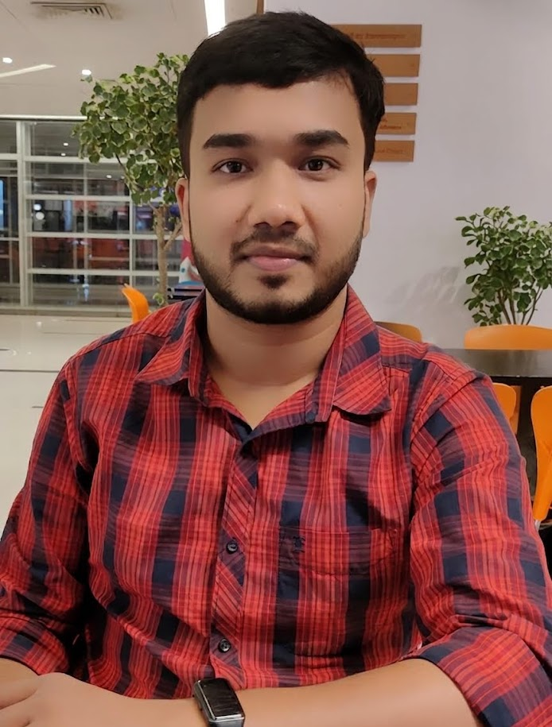

Research Interests
- Generative AI
- Large Language Models (LLMs)
- AI-driven Cybersecurity
- Deep Learning
- Agentic AI
Cybersecurity Researcher | PhD Student
PhD student in Computing at Queen's University, building practical AI systems across generative AI, large language models, and AI-driven cybersecurity.

I am currently pursuing a PhD in Computing at Queen's University (started September 2025), following my MSc in Computing at Queen's University (CGPA: 4.24/4.30) and a BSc in Computer Science and Engineering from Metropolitan University, Bangladesh (CGPA: 3.90/4.00).
My work sits at the intersection of research and engineering, where I design and ship AI-powered software with a strong focus on reliability, scalability, and meaningful impact.
September 2025 - Present
September 2024 - August 2025 | CGPA: 4.24/4.30
September 2015 - August 2019 | CGPA: 3.90/4.00
2025
The 2025 IEEE COMPSAC Conference, Toronto
Read Publication2024
IEEE Global Communications Conference (GLOBECOM)
Read Publication2022
HardwareX
Read Publication2021
International Conference on Biomedical and Bioinformatics Engineering
Read PublicationMentored project teams, provided implementation guidance, and supported evaluation of deliverables and presentations.
Designed assignments with instructor collaboration, coordinated grading, and supported students with coursework and exams.
Assisted assignment design, coordinated TA workflows, and supported student learning in operating systems.
Supported assignment development, grading, exam proctoring, and student communication.
Python, JavaScript, Java, Kotlin, PHP, C, C++
ML implementation, model training and evaluation, ML pipelines, LLM application development
Full-stack web/mobile/desktop development, scalable system design, Agile, Git, software testing & SQA
AWS, DigitalOcean, Docker
MySQL, PostgreSQL, SQLite, MongoDB, Firebase
Arduino, ESP8266, sensor integration, Figma
Open to collaborations in AI research, LLM applications, and software engineering opportunities.